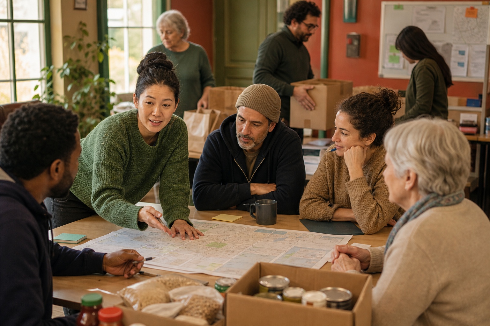
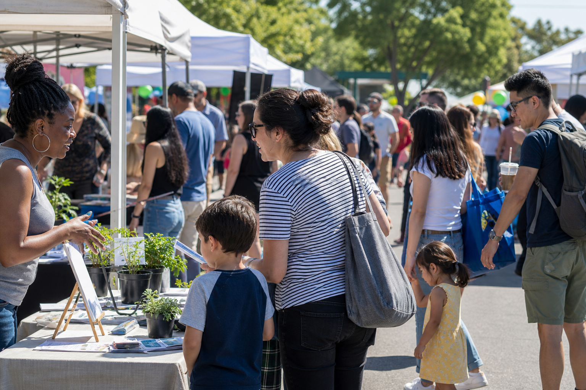
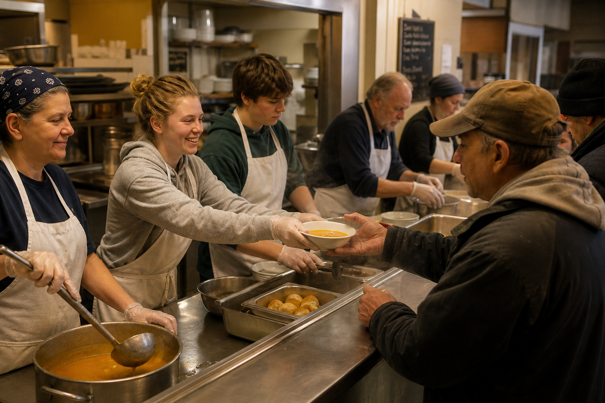

Campagne hiver (fictif)
Objectif : 12 000 € symboliques pour couvrir carburant et denrées imaginaires. Les barres ci-dessous illustrent un composant progress Bulma.
Maraude Jeunesse Urgence
Collecte générale
Fonds dédié jeunesse
Solidarité de proximité
Maraude, jeunesse, cuisines solidaires — contenu entièrement fictif pour maquette portfolio.
Trois blocs larges pour tester la lisibilité : chiffres inventés, aucune permanence réelle.
Terrain
Maraude nocturne
Environ 120 repas chauds / semaine (exemple). Fourgons et tournées imaginaires.
~ 4,20 € / repas (démo)
Jeunesse
Aide aux devoirs
18 collégiens suivis, deux séances hebdomadaires, matériel fourni (fictif).
12 € / an famille (démo)
Insertion
Ateliers CV
Simulations d’entretiens sur six mois — partenaires et emplois inventés.
Financement démo

Paragraphes longs pour tester la colonne texte : le réseau « Main Tendue 57 » est une fiction graphique. Les pourcentages, budgets et bénéficiaires ci-dessous servent uniquement à valider grilles, contrastes et hiérarchie typographique sur fond clair.
Cartographie des besoins
Zones Nord et Est inventées — cartes et données sans lien avec un territoire réel.
Partenaires cités
Mairies fictives, épiceries solidaires imaginaires, associations sœurs inventées pour remplir la tuile.
Chiffre du mois
+180
repas distribués (exemple)

Montants indicatifs — aucun paiement sur ce site.
15 €
Colis hygiène (démo)
40 €
Dix repas maraude (fictif)
150 €
Matériel scolaire (exemple)
Isabelle N.
Bénévole maraude · mars 2026
« Briefings clairs avant chaque tournée — tout est simulé pour la maquette. »
Karim D.
Parent · janvier 2026
« Les séances du mercredi : histoire fictive pour remplir l’espace de citation. »

Délais
Puis-je venir sans rendez-vous ? Non en démo : permanences listées à titre d’exemple.
Dons
Les dons sont-ils déductibles ? Texte juridique absent — vitrine sans valeur fiscale.
Formulaire sans envoi — champs pour tester field, select et checkbox.
Adresse fictive
12 rue des Primevères, 57000 Ville-Démo
Permanence (exemple)
Mer. 14h–17h